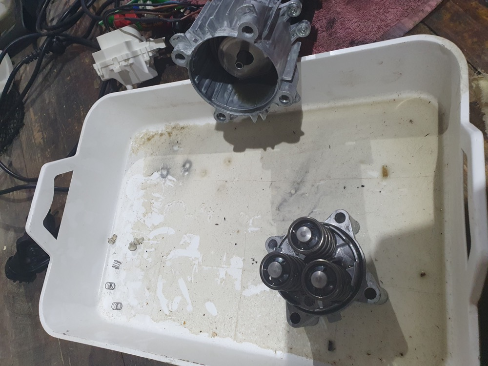
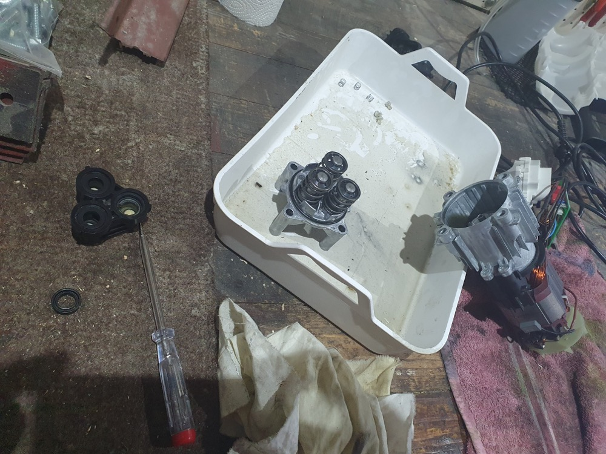
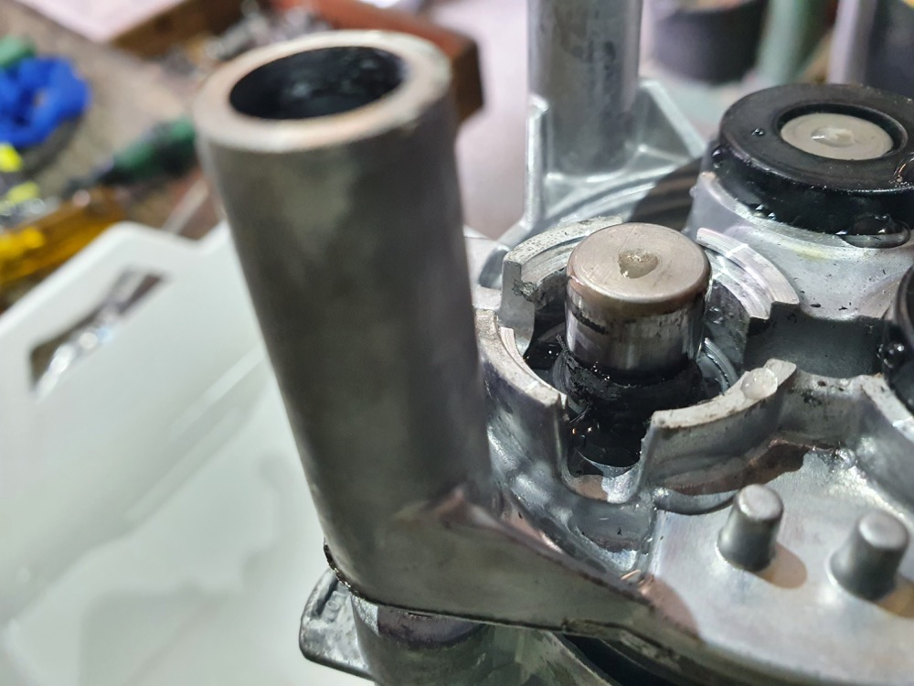
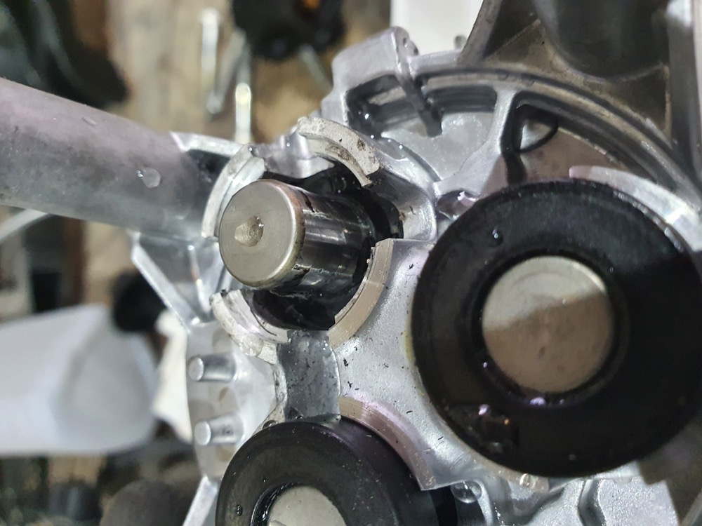
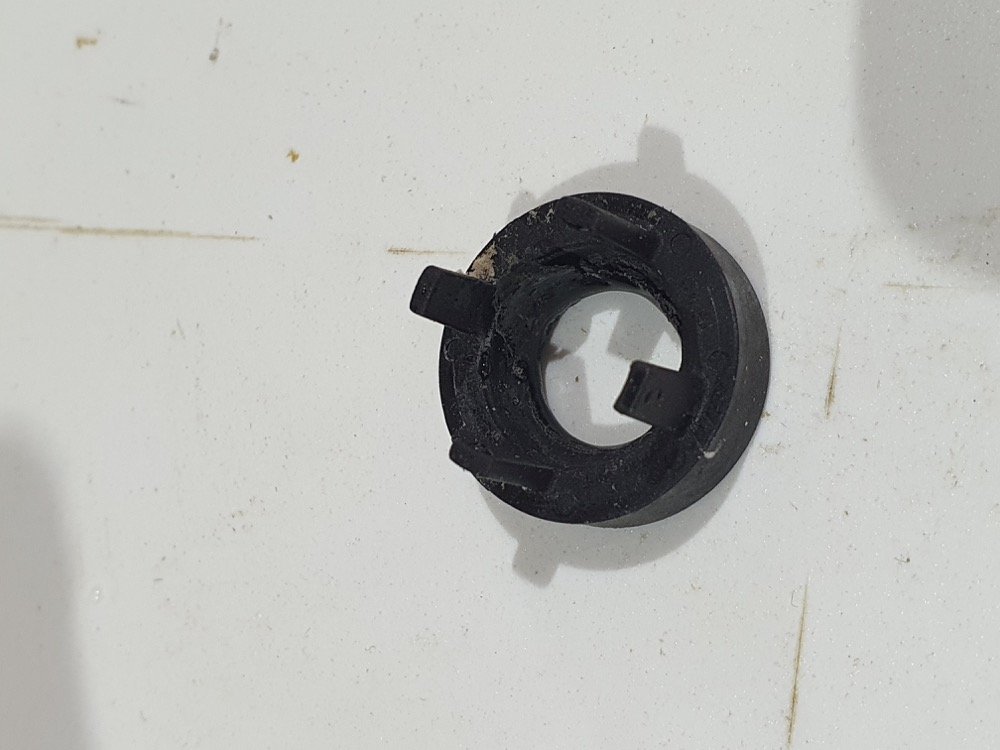
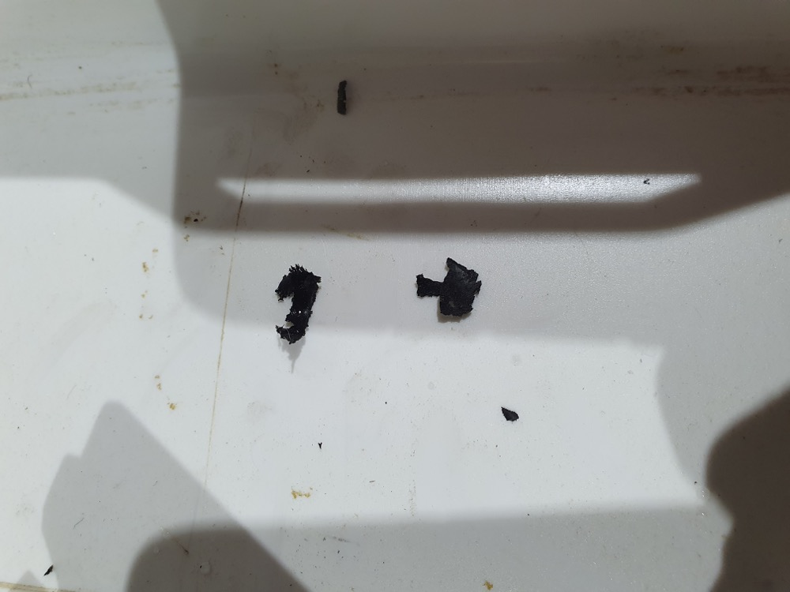

tgauweiler / Kärcher
Introduction
After the winter our Kärcher wasn’t working anymore. Best guess was that not all water was drained and the cold damaged something.
Repair
 
- Opening is straight forward.
- The motor screws also hold in the oil!
    One compression cylinder did some damage on its plastic duct and damaged the seal around it.
Replacing it was straight forward, but it turns out the main problem was the the pressure line after the motor.
Always test correctly first!
Conclusion
Accidentally draining the oil was a mess. Testing everything first would have saved some delivery costs. Disassembly was easy, its a straight forward design with only screws and the replacement parts are available by Kärcher for everything.